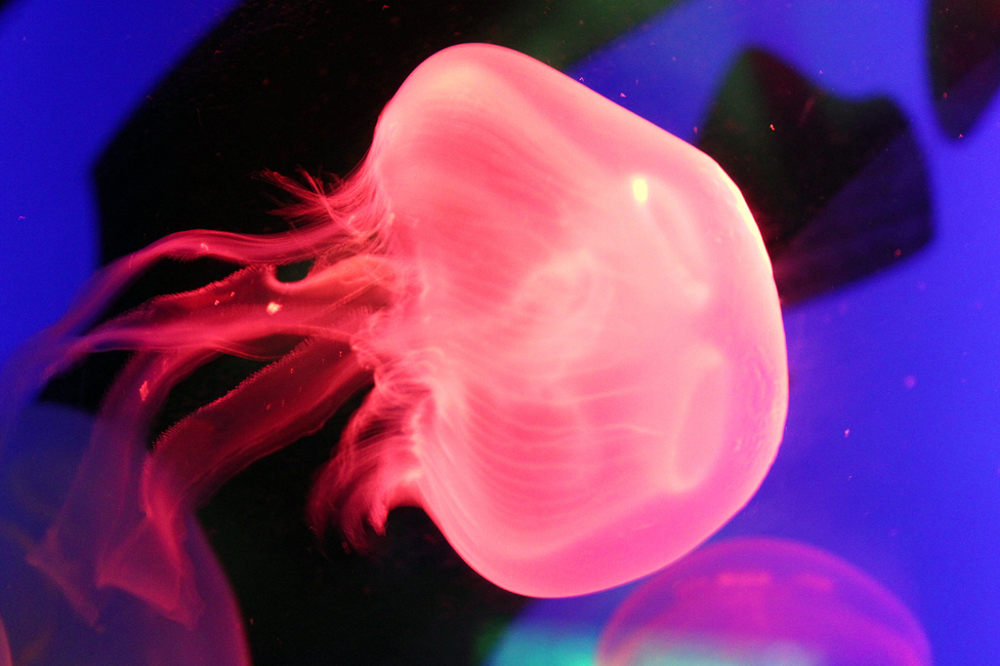

Fish and Amphibians were among the first vertebrates, creatures with internal skeletons, and each species has evolved to help it survive in a specific habitat. Fish are uniquely adapted to the watery world, with gills for breathing and fins for swimming. They can live in oceans, lakes, and freshwater rivers and streams. Some of the world's most exotic and brilliantly coloured animals are the fish of the warm tropical oceans, while strange and little-known fish inhabit the cold, dark ocean deeps. Many fish are valued as food by people, and the conservation of commercial fish stocks is a key issue for the future. Some fish remain elusive and even feared; few animals match the reputation infact and fiction of the shark.
Way back in evolotionary prehistory, some species moved from water to dry land, breathing by means of lunglike air sacks. Fish with photo-limbs, known as lobe-fin fishes, were able to exploit new food sources and, over time, adapted to life on land. This evolutionary change - from water- dwelling to land-dwelling animals - retained a link with water through breeding behaviour; these are the amphibians, such as frogs and toads. The living amphibians are a tiny fraction of a once- numerous class that appeared during devonion period of prehistory, but most became extinc during the later triassic period.